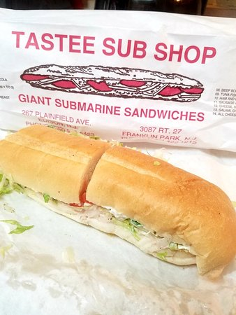

Super Sanwhich

Description
The ideal sandhwhich. A 16-inch sub pack full of all the ingredients that get your body going.
The aroma is tantalizing. Best served with a side of chips and a soda.
Ingredients
- Bread
- Lettuce
- Tomatoes
- Cheese
- Onions
- Smoked Turkey
- Vinegar
- Oil
- Salt
- Oregano
- Mayonaise
Steps
- Cut your bread open
- Layer your turkey slices
- layer your cheese slices on the turkey
- slap all the veggies on, then add oil, vinegar, salt, and oregano on top
- Apply mayonaise to the alternate side of the bread
- Optional: Prepare dill pickles to crunch on on the side in between bite of your sandwhich